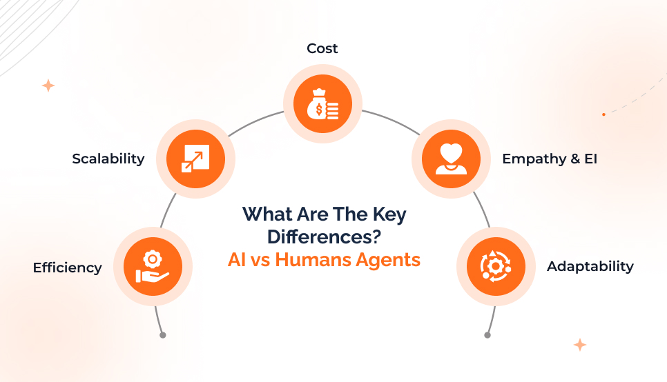

There’s a lot of buzz about artificial intelligence and the question of AI agent vs human agent is a popular point of debate. The considerations are many in this debate which ranges from the technology, to the costs, to ethical considerations. Regardless of what the considerations are, what matters to businesses is if they can go beyond these and see if they can make their customer experience better for the long term. In this blog, this is exactly what we are going to explore and in about 10 minutes we will cover what AI and Human agents are, the key differences and the benefits of AI agents and human agents.
So let’s get right into the conversation.
A Brief Introduction to AI vs human agents for Businesses
The debate about AI agent vs human agent has been going on for a long time and it gets heated considering the global scale of how generative AI is transforming businesses. For some people the worry is ethical because many people think that AI could take jobs previously done by humans. To some people the thought goes directly to Skynet from the James Cameron movies. In reality AI is not about any of that and is a tool to help us get work done faster so that we as businesses can focus on things that are important like people, sales and strategy.
However, since AI agent vs human agent is a conversation I think it’s important to understand what this means for businesses. Let’s take an industry like banking for example and many banks use AI agents in the form of chatbots and IVR systems. If these systems were not in place then customer services would become an impossible task. Millions of people use banks and transact everyday and a lot of people will have grievances. If all of them start calling up human agents then customers would have to wait in long queues to get their issues sorted or businesses will have to employ that many people to handle these queries.
The question here is not about AI agent vs human agent but about how you can make the customer experience seamless and help your business grow. Developing modern AI agents is not like chatbot development that we saw in the past. These AI agents of the past were mostly just chatbots that could understand keywords and send responses based on predefined text. The problem there is that your AI agent won’t truly understand what your customers want; it's just a game of matching. Modern AI agents however work on complex artificial intelligence models that can mimic human neurons and understand natural language. In just a few we will compare AI agent vs human agent but now let's concentrate on understanding what they are.
What is an AI Agent?
In a nutshell an AI agent is a computer program that can understand different kinds of inputs from humans or other sources and generate responses based on what it understands. Since the word “Agent” is in play here you can say that a conversational AI agent can understand natural language and can be used by anyone. Because artificial intelligence is an advanced and complex technology and the key to using it is to make it as simple to use as possible. If it’s complex then it will just waste time.
In the conversation about AI agent vs human agent it is important to understand how these AI agents work so that you can understand why implementing them into your business can improve your growth. AI agents work using a few special advancements in the field of AI; natural language processing or NLP, machine learning or ML, deep learning or DL and reinforcement learning or RL. Now these are fancy words for saying that engineers have created artificial neurons like the ones in our brains through code to process data in different ways.
This brings us to an advantage when it comes to AI agent vs human agent because AI agents can process a large amount of data quickly. Something that humans may not be able to unless you’re a savant. But this “small” feature of AI agents means that you can simultaneously handle multiple customer requests, effectively provide personalized services to customers and make the customer experience as seamless as possible. And what if a customer’s query is not within the scope of the AI agent? That’s not a problem at all because the great thing about AI agents is that they can be automated and you can easily program it to connect to a human agent if the responses are not satisfactory for the customer.
What is a Human Agent?
If you’re searching for the term AI agent vs human agent this should be pretty much self explanatory and human agents are basically the employees of your business. If you have a customer support executive who handles queries from your customers and tries to solve them then that is a human agent. Human agents are enough for a lot of scenarios when you’re a small business or if the major parts of your revenue only comes from a few customers. On a much larger scale if you have thousands or even millions of customers it becomes quite expensive to hire and manage human agents. When you consider the debate about AI agent vs human agent the major problems that you would encounter which prompts businesses to lean towards AI agents are the cost and the customer experience. Because human agents can only work a fixed number of hours in a day while AI agents can work round the clock and still deliver the same performance.
Human agents are also not automated and you have to spend a significant amount of time and money to train them and align them with your business goals. You have to create processes, standard operating procedures and many more background work before you can implement them. AI agent vs human agent in this context gives AI agents the advantage because you can program AI agents to perform specific tasks and they can perform these tasks in an automated manner. However, the benefit of human agents is that they can cater to nuanced scenarios where the customer has an unprecedented problem or need.
Key Differences Between AI Agents and Human Agents
Now that we have looked at both AI agents and human agents separately lets now understand the key differences between them both. Before you learn about how to build AI agent you need to know why it is beneficial.
AI vs Humans Agents: What Are The Key Differences?

1. Efficiency
In the AI agent vs human agent conversation the major difference between them is the efficiency. Since they can process vast amounts of data, analyze patterns and deliver responses quickly you can implement AI agents for tasks that require a lot of precision and speed. While a trained human can also be precise AI agents can always outperform a human when it comes to the combination of speed and precision. Let’s just say that you have a chatbot for customer support and you get hundreds or even thousands of requests a day. A single AI agent can simultaneously handle all of these requests at once. You can even implement multi-agent systems if you want to add additional functionalities like invoicing, authentication and so on.
2. Scalability
The other thing in the AI agent vs human agent conversation is the scalability you have with AI agents which is almost infinite. Since AI agents are essentially computer programs, if you can increase their infrastructure as your business scales your AI agent will also perform well even with thousands or even millions of customers requiring assistance. In this case you are only scaling the technological requirements of your AI agent like the cloud infrastructure. However, if you look at scalability with human agents you will need to spend time and money on hiring, training and managing more employees as your business scales.
3. Cost
The major benefit of AI agent vs human agent is that in the long term it can be very cost effective and I’ll tell you why. Yes it is true that training AI agents can be expensive but the thing is that once you train your AI agents then all you have to do is provide an infrastructure for your AI agent and then it’s done. As your business grows so will your customer demands. Today in the telecom industry countless people call up customer service and a lot of them can find what they need through the IVR system or even the chatbots. So when you look at AI agent vs human agent the telecom company may have had to bear the AI agent development cost but they don’t have to keep hiring AI agents even in peak traffic periods like festivals and so on. E-commerce businesses do this all the time and they don’t have to scale their workforce drastically during high customer demands which keeps their spending in check.
4. Empathy and Emotional Intelligence
This area is where human agents outperform AI agents because emotions are something only living beings can express and feel. If you look at this from a customer service point of view it’s clear where the AI agent vs human agent conversation sits because human agents can connect with customers on a deeper level, understand their frustrations and even help them solve problems empathetically. This is not just about feeling what your customers feel you can change the tone of your voice and the way you speak to put customers at ease and this goes a long way in ensuring trust and confidence with your customers. Even with natural language processing and machine learning or deep learning AI systems cannot replicate human empathy.
5. Adaptability
Adapting to changing situations is a key part of any business and the fact is that things change all the time. If you look at AI agent vs human agent here the reality is that AI agents can’t go beyond what they are programmed to do. Human agents can handle unforeseen circumstances, think creatively and think crucially when they are in diverse situations. But AI doesn’t have life experiences, relationships and apart from basic self awareness they are not capable of thinking on their own like we humans do. We have cultural ties and can understand context even in nuanced conversations.
Advantages of AI Agents Over Human Agents
As we’ve already talked about AI agents have a lot of advantages over human agents especially when it comes to efficiency of availability, scalability and cost effectiveness. One of the major advantages of AI agent vs human agent is that they are very fast and precise. Since they work on an input output basis you don’t have to worry about anything else. They can provide services round the clock and process vast amounts of data while also being able to do repetitive tasks simultaneously.
Since they only have to worry about the data given to them, unlike human agents who take in everything around them, AI agents are able to be very accurate and precise with their responses. This comes in handy for businesses because certain tasks that you would need to do in business are repetitive and implementing AI agents for this allows you to do them simultaneously.
When you look at AI agent vs human agent scalability is an area where AI can outperform human agents because these are computer programs. Most modern AI systems work using cloud infrastructure and all you have to do is make sure you have the necessary scaling systems in place and your AI agent can function seamlessly and provide a great customer experience for your customers.
This also brings us to the long term cost savings because you are only spending for scaling your infrastructure not hiring more and more people to meet customer demands. When you look at the cost associated with AI agent vs human agent your AI agent may cost some money to set up and train but once you’ve covered that your AI agent can perform hundreds of tasks simultaneously.
Advantages of Human Agents Over AI Agents
If you think about it, we are trying to emulate humans through AI agents which means that humans bring a lot of advantages to the table. Humans are an essential part of any industry and they have qualities that AI agents cannot replicate. For example humans bring creativity, empathy and nuanced decision making into the mix which helps especially in unprecedented scenarios. If you look at AI agent vs human agent one of the most significant benefits is that human agents can understand emotions and respond accordingly.
Because humans can understand emotions and feel them or you can say because of their emotional intelligence they can handle sensitive situations with compassion and care while AI agents can only respond based on predefined rules. For instance if your customer is frustrated with your product or service an AI may not be able to properly handle them while you can escalate that conversation to a human agent and they can provide your customer with personalized support.
Creativity is also a factor in AI agent vs human agent because while AI systems can consume and process vast amounts of data and recognize patterns humans can think of original ideas. Human agents can approach problems from different avenues and provide customers with meaningful solutions rather than responses.
When to Use AI Agents vs. Human Agents?
This is a very good question because as you may have already figured out the purpose of AI agents is not to replace all human agents. The reality is that AI agents are here to save you time, handle multiple requests and allow you to focus on important aspects of your business like marketing, sales and service delivery.
So how will this work because then AI agent vs human agent which one should you choose for your business? The answer is that to run a successful business and provide your customers with a great experience a combination of AI agents and human agents work best. For example for customer support you can implement an AI agent to answer questions from users and even provide them with solutions. However, if your customer has nuanced problems or if the AI agent cannot provide them with the right solutions then you can switch the conversation over to a human agent. Here the equation is not AI agent vs human agent it’s about a seamless cohesion of the two and the end goal is a better customer experience.
In this scenario repetitive tasks like records keeping, answering basic questions, invoicing and other such activities can be performed by your AI agent. While at the same time you can use a human agent to solve deeper customer problems, onboard new customers, understand their needs and provide tailored services.
AI Agents and Human Agents Working Together: A Hybrid Model
Like we’ve touched based on the earlier part of our conversation your goal is not to replace humans but to use humans along with AI automation to provide a great customer experience. Now we’ve moved past AI agent vs human agent and the first step is to create your AI agent and train it with sufficient data relevant to your business and implement it as the first point of contact for your users. This could be customer support, generating and managing invoicing, scheduling meetings, sending emails and in turn taking the time consuming activities out of the equation so that your human agents can focus on your product, services and customers.
We have seen this combination of AI + human agents in many industries like telecom, finance, e-commerce and many more. E-commerce brands for example have not thought AI agent vs human agent but they have created automated AI agent systems in place to help customers find solutions faster and round the clock. While human agents can handle things like verifying the authenticity of the customers’ claims, building trust with the customers through personalized support and empathetically approaching bigger problems. This is a proven method for many businesses and setting up your AI agent and training them is accessible today for businesses through various AI agent development frameworks.
AI agents can also be used in other ways like in the form of productivity tools to help human agents get work done faster. When you think AI agent vs human agent you can’t forget the role ChatGPT has played in transforming industries around us. When ChatGPT came along many developers feared that their jobs would be taken because you could even generate code using simple text prompts. However, in reality the truth is a little different than this.
Sure, you can generate code using ChatGPT but it takes a human developer who knows what they are doing to understand that code properly, understand the business problem and provide solutions accordingly. In reality, if you give someone ChatGPT and ask them to build an app they won’t be able to do it. Maybe the writing of the code can be faster for AI agent vs human agent but it’s the human agents or developers who have to implement the code and create a functional product.
This combination of human intelligence with AI automation is a game changer for businesses because you can now have the speed and accuracy of AI agents while having the emotional intelligence, real world experience and deeper connections of human agents. If you’ve noticed recently many businesses have implemented this combination into their business processes and are providing customers with a much more seamless experience.
Challenges and Limitations of AI Agents vs Human Agents
In the AI agent vs human agent conversation both AI agents and human agents have their challenges and advantages. But that’s where the real power lies because some of the challenges with AI agents can be mitigated through human agents and some of the challenges of human agents can be mitigated through AI agents.
If we take customer support operations for example before AI agents came align businesses relied on call centers and hundreds of employees to serve their customers. If you’ve noticed now businesses still rely on call centers to serve their customers better. The change is that they have implemented AI agent vs human agent for the first point of contact a customer has with their business and humans only take over when the AI agent cannot meet all the user demands.
If we look at the challenges of human agents in this scenario it is that human agents are prone to fatigue and can only work a limited number of hours while AI agents can work round the clock. This allows you to serve your customers even if they reside in different parts of the world. If you’re a global e-commerce brand, a mid sized agency or any such business where your clients are located all over the world then this strategy can help you make the most of your time and money and in turn help you grow your business exponentially.
The Future of AI Agents vs Human Agents
Understanding the future of AI agent vs human agent is simple because more and more businesses will adopt AI agents and combine them with human agents to make their business operations more efficient. TheAI agent development process today is very accessible to businesses and this means that even if you’re a small business you can implement AI agents into your operations and drive growth faster.
However, there are a few caveats that you need to consider when embarking on this journey as a business. While there are affordable AI agent development solutions out there they are not “cheap.” If you’ve searched for the term AI agent vs human agent then you’re probably thinking seriously about using AI in your business to help you scale faster. You as the business owner should have a basic understanding of how AI agents work and how much it will cost to build your own AI agent.
You also have to learn more about where you can implement your AI agent and where you will have to rely on a human agent to make sure that your operations are seamless. In the future major parts of customer support operations will be taken over by AI and this will allow your customer support agents to free up their time so that they can focus on solving your customers’ most priority problems rather than answering basic questions.
In the AI agent vs human agent conversation there are many other tasks that AI agents can perform not just customer service. For example financial institutions especially in quant finance use AI agents to analyze patterns in financial data and help them make meaningful decisions for things like investments, risk management and portfolio management. AI bots are very popular in this sector because they can execute trades quickly whenever there is an opportunity and also predict potential asset performance based on the historical data and changes in patterns.
While this relates to very large institutions the question of AI agent vs human agent in smaller scale businesses is also relevant. Decision making has to be effective and informed regardless of the size of your business. In this scenario AI agents can actually save small to medium sized businesses time and money. If you’re a small brand that already has a customer base it usually takes a qualified analyst to understand the patterns in your data and help you make informed decisions. With AI smaller businesses can easily circumvent that and use AI agents to make sense of their data and provide them with the right information at the right time for effective decision making.
By now you should have figured out that how AI agents are transforming businesses all around us and we have gone beyond AI agent vs human agent into how we can use AI to make our human agents more efficient. This has penetrated into almost all sectors with even healthcare businesses using AI agents for basic diagnostics, to send patients reminders and for guiding them to live healthy lifestyles without having to wait in line for the first consultation. The legal sector AI agents are helping people who do not have access to good representation and helping them understand their rights and possible ways to tackle legal problems before they can seek help from a professional. The possibilities are endless.
Final Words About AI Agents vs Human Agents
We have come a long way in our conversation about AI agent vs human agent and we have gone through how AI agents work, how they differ from human agents, how they can improve your business’s efficiency and what the future will be like for businesses. If you’re planning to implement AI agents into your business it’s important to understand that these are complex systems and you need the right solutions to get proper responses. Many founders and business owners make the mistake of opting for cheap AI agent development in the hopes that they can achieve massive growth without sending much money.
The reality here is that most of these solutions only talk about AI agent vs human agent and not about how you can build a solid system for your business to combine both these to provide your customers with a great experience when interacting with your business. These cheap solutions can often cost you more in the long run because you only get limited responses and the data they are trained on may not be sufficient. Because if you’ve read so far then you understand that training AI agents requires a lot of good quality data and both acquiring the data and training your AI agent will cost some money initially. Your real benefits are in the long run in term of the monetary savings although it is undeniable that your customers will feel the improvement in customer experience.
Technical Architect
At Sparkout Tech Solutions, we believe in the power of collaboration. I take pride in fostering a team culture that encourages open communication, knowledge sharing, and continuous learning. In the ever-evolving tech landscape, I am committed to staying at the forefront of industry trends. This commitment allows us to deliver solutions that not only meet but exceed our clients' expectations